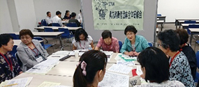

7月13日（金）14時30分より、浦和コミュニティセンター第15集会室にて、第54回埼玉県消費者大会実行委員会が開催され、17団体25人と事務局3人が出席しました。
|  |
＊今回は実行委員会の前に
県内消費者団体全体研修会が開催されました |
【議題】
1．事務局長から
2．第3回実行委員会報告
3．基調報告の確認
4．「埼玉県への要請」について意見交換
5．大会当日の内容と役割分担について確認
- オープニングの実行委員会団体紹介スライドで使用する写真とコメントについては、8月実行委員会に持ち寄る
- ロビーでの活動報告展示について、各団体で作成が難しい場合は、9月実行委員会までに事務局に作成を依頼する
- 実行委員会団体の全体会での座席指定は、9月実行委員会時点で集約する参加人数を目安に作成する
- 役割分担については、当該団体と事務局で確認をおこない、8月実行委員会で確認。司会を担っていただく方と事前に打合せの時間を持つなどのサポートを充実させる
6．分科会の内容について話し合い
各分科会のテーマについて、以下のように確認
- ・食の分科会
- おいしい埼玉！畜産物をめぐる国内外の現状
- ・消費者問題分科会
- 成年年齢が引下げになると、何が起きる？
- ・社会保障分科会
- 貧困問題をより理解するために 映画上映
- ・環境分科会
- 再生可能エネルギーの現状とこれから
7．実行委員会団体へのお知らせ
埼玉県金融広報アドバイザー講師派遣について
□次回日程
8月22日（水）13時30分～
市民会館うらわ1F会議室
|